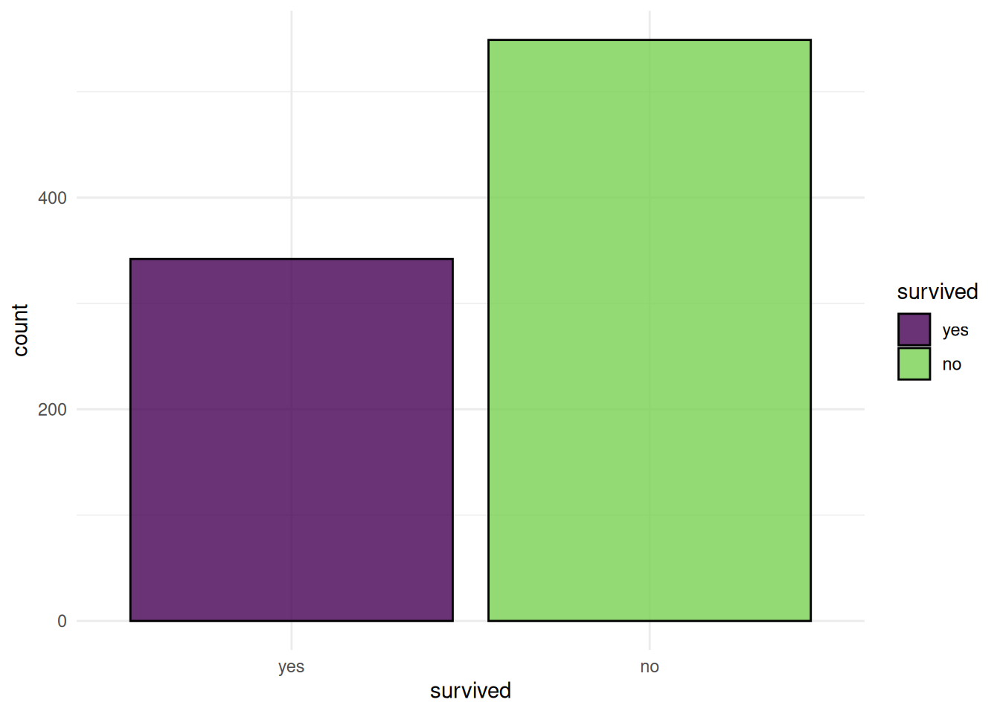
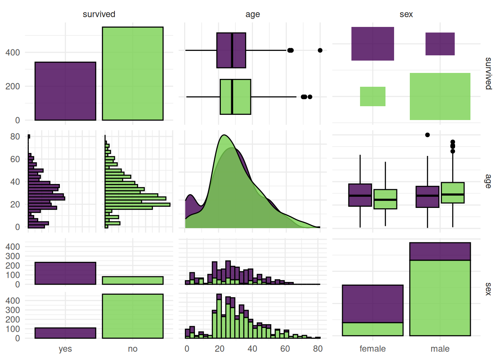
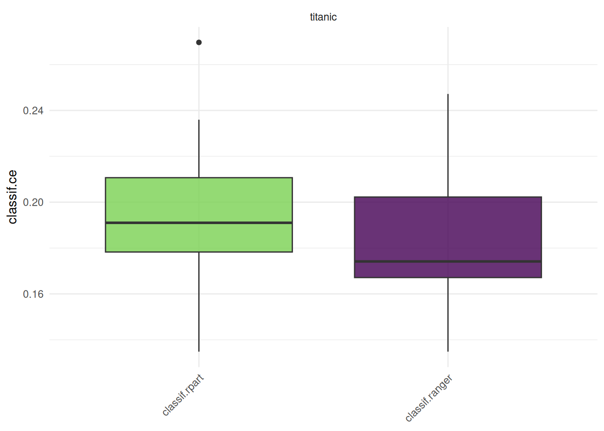
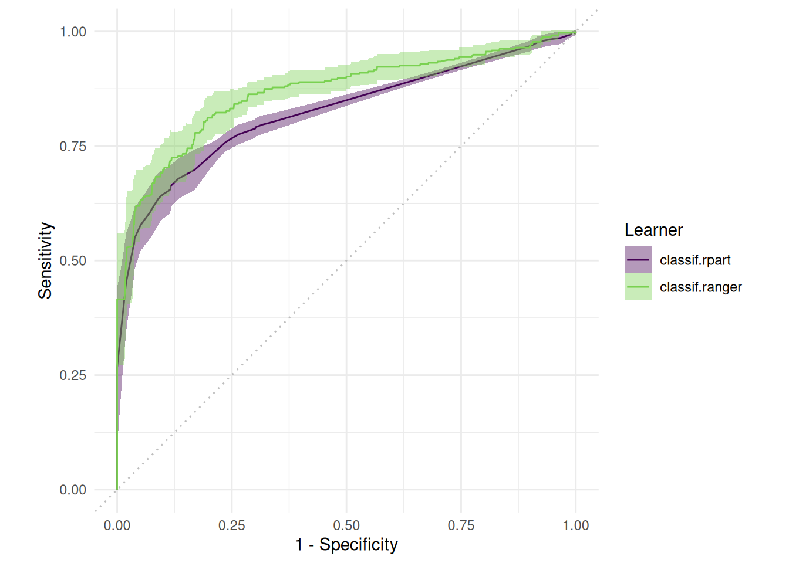
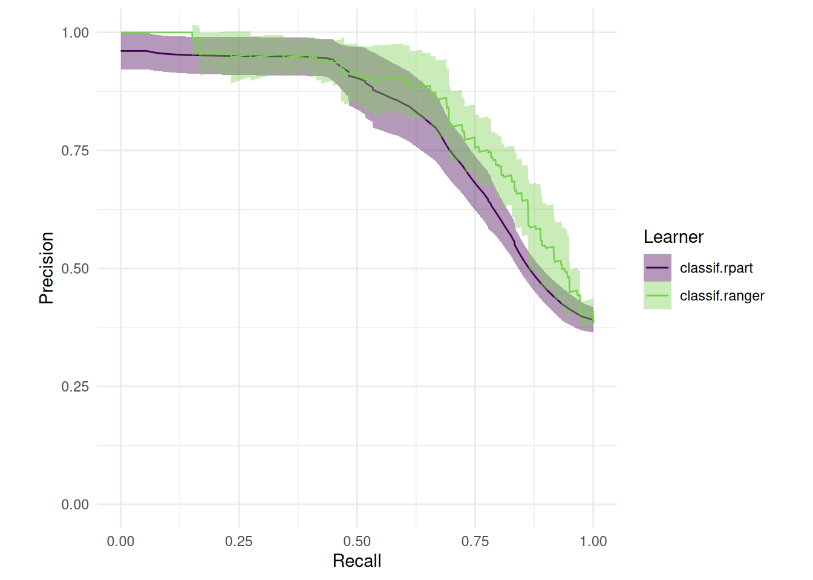

library(mlr3verse)
library(mlr3learners)This is the second post of the titanic use case series. You can find the first use case here.
In this section we will focus on more advanced usage of mlr3pipelines . Specifically, this section illustrates the different options when it comes to data imputation and feature engineering. Furthermore, the section shows how to benchmark, feature engineer and compare our results.
We load the mlr3verse package which pulls in the most important packages for this example. The mlr3learners package loads additional learners. The data is part of the mlr3data package.
We initialize the random number generator with a fixed seed for reproducibility, and decrease the verbosity of the logger to keep the output clearly represented.
set.seed(7832)
lgr::get_logger("mlr3")$set_threshold("warn")
lgr::get_logger("bbotk")$set_threshold("warn")
future::plan("multicore")As in the basics chapter, we use the titanic data set. To recap we have undertaken the following steps:
data("titanic", package = "mlr3data")
# setting up the task
task = as_task_classif(titanic, target = "survived", positive = "yes")Target column 'survived' contains missing values. This will be an error in the future.task$filter(1:891)
task$select(cols = setdiff(task$feature_names, c("cabin", "name", "ticket")))
# setting up the learner
learner = lrn("classif.rpart")
#setting up our resampling method
resampling = rsmp("cv", folds = 3L)$instantiate(task)
res = resample(task, learner, resampling, store_models = TRUE)Imputation
A very simple way to do this to just impute a constant value for each feature. We could i.e. impute every character or factor column with missing and every numeric column with -999. And depending on the model, this might actually be fine. This approach has a few drawbacks though:
-999could be a real value in the data.- imputing
-999skews the distribution of the data, which might result in bad models.
As a result, instead of imputing a constant value, we will do two things: * Draw samples from each numeric features’ histogram using PipeOpImputeHist * Add an additional column for each variable that indicates whether a value was missing or not. If the information that a value was missing is important, this column contains this information.
This imputation scheme is called ‘imputation with constants’ and is already implemented in mlr3pipelines . It can be done using PipeOpImputeConstant.
Remember that we are trying to optimize our predictive power by using a random forest model (mlr_learners_classif.ranger). Now, random forest models do not naturally handle missing values which is the reason why we need imputation. Before imputation, our data looks as follows:
task$missings()survived age embarked fare parch pclass sex sib_sp
0 177 2 0 0 0 0 0 Let’s first deal with the categorical variables:
po_newlvl = po("imputeoor")
task_newlvl = po_newlvl$train(list(task))[[1]]Note that we use the PipeOp in an unusual way, which is why the syntax does not look very clean. We’ll learn how to use a full graph below.
First, let’s look at the result:
task_newlvl$missings()survived fare parch pclass sex sib_sp age embarked
0 0 0 0 0 0 0 0 Cool! embarked does not have missing values anymore. Note that PipeOpImputeOOR by default affects character, factor and ordered columns.
For the numeric features we want to do two things, impute values and add an indicator column. In order to do this, we need a more complicated structure, a Graph.
Our po_indicator creates the indicator column. We tell it to only do this for numeric and integer columns via its param_vals, and additionally tell it to create a numeric column (0 = “not missing”, 1 = “missing”).
po_indicator = po("missind",
affect_columns = selector_type(c("numeric", "integer")), type = "numeric")Now we can simultaneously impute features from the histogram and create indicator columns. This can be achieved using the gunion function, which puts two operations in parallel:
graph = gunion(list(po_indicator, po("imputehist")))
graph = graph %>>% po("featureunion")Afterwards, we cbind the resulting data using po("featureunion"), connecting the different operations using our graph connector: %>>%. We can now also connect the newlvl imputation:
graph = graph %>>% po("imputeoor")and see what happens when we now train the whole Graph:
task_imputed = graph$clone()$train(task)[[1]]
task_imputed$missings() survived missing_age pclass sex fare parch sib_sp age embarked
0 0 0 0 0 0 0 0 0 Awesome, now we do not have any missing values!
autoplot(task_imputed)
We could now use task_imputed for resampling and see whether a ranger model does better. But this is dangerous! If we preprocess all training data at once, data could leak through the different cross-validation folds. In order to do this properly, we have to process the training data in every fold separately. Luckily, this is automatically handled in our Graph, if we use it through a GraphLearner.
We can simply append a ranger learner to the Graph and create a GraphLearner from this.
graph_learner = as_learner(graph$clone() %>>%
po("imputesample") %>>%
po("fixfactors") %>>%
po(learner))We needed to use the following commands for the Graph: * PipeOpFixFactors: Removes empty factor levels and removes factor levels that do not exist during training. * PipeOpImputeSample: In some cases, if missing factor levels do not occur during training but only while predicting, PipeOpImputeOOR does not create a new level. For those, we sample a random value.
rr = resample(task, graph_learner, resampling, store_models = TRUE)
rr$aggregate(msr("classif.acc"))classif.acc
0.7934905 So our model has not improved heavily, currently it has an accuracy of 0.79.
Feature Engineering
We will do this using PipeOpMutate in order to showcase the power of mlr3pipelines . Additionally, we will make use of the character columns. Hence, we will re-select them:
task$col_roles$feature = c(task$feature_names, c("cabin", "name", "ticket"))library("stringi")
po_ftextract = po("mutate", mutation = list(
fare_per_person = ~ fare / (parch + sib_sp + 1),
deck = ~ factor(stri_sub(cabin, 1, 1)),
title = ~ factor(stri_match(name, regex = ", (.*)\\.")[, 2]),
surname = ~ factor(stri_match(name, regex = "(.*),")[, 2]),
ticket_prefix = ~ factor(stri_replace_all_fixed(stri_trim(stri_match(ticket, regex = "(.*) ")[, 2]), ".", ""))
))Quickly checking what happens:
task_eng = po_ftextract$clone()$train(list(task))[[1]]
task_eng$data() survived age embarked fare parch pclass sex sib_sp cabin
<fctr> <num> <fctr> <num> <int> <ord> <fctr> <int> <char>
1: no 22 S 7.2500 0 3 male 1 <NA>
2: yes 38 C 71.2833 0 1 female 1 C85
3: yes 26 S 7.9250 0 3 female 0 <NA>
4: yes 35 S 53.1000 0 1 female 1 C123
5: no 35 S 8.0500 0 3 male 0 <NA>
---
887: no 27 S 13.0000 0 2 male 0 <NA>
888: yes 19 S 30.0000 0 1 female 0 B42
889: no NA S 23.4500 2 3 female 1 <NA>
890: yes 26 C 30.0000 0 1 male 0 C148
891: no 32 Q 7.7500 0 3 male 0 <NA>
name ticket fare_per_person deck title surname
<char> <char> <num> <fctr> <fctr> <fctr>
1: Braund, Mr. Owen Harris A/5 21171 3.62500 <NA> Mr Braund
2: Cumings, Mrs. John Bradley (Florence Briggs Thayer) PC 17599 35.64165 C Mrs Cumings
3: Heikkinen, Miss. Laina STON/O2. 3101282 7.92500 <NA> Miss Heikkinen
4: Futrelle, Mrs. Jacques Heath (Lily May Peel) 113803 26.55000 C Mrs Futrelle
5: Allen, Mr. William Henry 373450 8.05000 <NA> Mr Allen
---
887: Montvila, Rev. Juozas 211536 13.00000 <NA> Rev Montvila
888: Graham, Miss. Margaret Edith 112053 30.00000 B Miss Graham
889: Johnston, Miss. Catherine Helen "Carrie" W./C. 6607 5.86250 <NA> Miss Johnston
890: Behr, Mr. Karl Howell 111369 30.00000 C Mr Behr
891: Dooley, Mr. Patrick 370376 7.75000 <NA> Mr Dooley
ticket_prefix
<fctr>
1: A/5
2: PC
3: STON/O2
4: <NA>
5: <NA>
---
887: <NA>
888: <NA>
889: W/C
890: <NA>
891: <NA>autoplot(task_eng$clone()$select(c("sex", "age")), type = "pairs")Warning: Removed 177 rows containing non-finite outside the scale range (`stat_boxplot()`).`stat_bin()` using `bins = 30`. Pick better value `binwidth`.Warning: Removed 177 rows containing non-finite outside the scale range (`stat_bin()`).Warning: Removed 177 rows containing non-finite outside the scale range (`stat_density()`).Warning: Removed 177 rows containing non-finite outside the scale range (`stat_boxplot()`).`stat_bin()` using `bins = 30`. Pick better value `binwidth`.Warning: Removed 177 rows containing non-finite outside the scale range (`stat_bin()`).
Now we can put everything together again, we concatenate our new PipeOp with the Graph created above and use PipeOpSelect in order to de-select the character features we used for feature extraction. Additionally, we collapse the ‘surname’, so only surnames that make up more than 0.6 % of the data are kept.
In summary, we do the following:
mutate: Thepo_ftextractwe defined above extracts additional features from the data.collapsefactors: Removes factor levels that make up less then 3 % of the data.select: Dropscharactercolumns.gunion: Puts twoPipeOps in parallel.missind:po_indicatoradds a column for each numeric with the info whether the value is NA or not.imputehist: Imputes numeric and integer columns by sampling from the histogram.
featureunion: Cbind’s parallel data streams.imputeoor: Imputes factor and ordered columns.fixfactors: Removes empty factor levels and removes factor levels that do not exist during training.imputesample: In some cases, if missing factor levels do not occur during training but only while predicting,imputeoordoes not create a new level. For those, we sample a random value.Learner: Appends a learner to theGraph.
The full graph we created is the following:
learner = lrn("classif.ranger", num.trees = 500, min.node.size = 4)graph_final = po_ftextract %>>%
po("collapsefactors", param_vals = list(no_collapse_above_prevalence = 0.03)) %>>%
po("select", param_vals = list(selector = selector_invert(selector_type("character")))) %>>%
gunion(list(po_indicator, po("imputehist"))) %>>%
po("featureunion") %>>%
po("imputeoor") %>>%
po("fixfactors") %>>%
po("imputesample") %>>%
po(learner)Evaluation
Let us see if things have improved:
graph_learner = as_learner(graph_final)
rr = resample(task, graph_learner, resampling, store_models = TRUE)
rr$aggregate(msr("classif.acc"))classif.acc
0.8249158 We have improved even more!
Benchmarking
To undertake benchmarking, we need to set up a benchmarking design. The first step is creating a list with the learners we used, namely the learners form the first and second part of this use case.
learners = list(
lrn("classif.rpart", predict_type = "prob"),
lrn("classif.ranger", predict_type = "prob")
)Now we can define our benchmark design. This is done to ensure exhaustive and consistent resampling for all learners. This step is needed to execute over the same train/test split for each task.
bm_design = benchmark_grid(task_imputed, learners, rsmp("cv", folds = 10))
bmr = benchmark(bm_design, store_models = TRUE)
print(bmr)
── <BenchmarkResult> of 20 rows with 2 resampling run ──────────────────────────────────────────────────────────────────
nr task_id learner_id resampling_id iters warnings errors
1 titanic classif.rpart cv 10 0 0
2 titanic classif.ranger cv 10 0 0So, where do we go from here? We could for instance use a boxplot:
autoplot(bmr)
Further we are able to compare sensitivity and specificity. Here we need to ensure that the benchmark results only contain a single Task:
autoplot(bmr$clone()$filter(task_id = "titanic"), type = "roc")
Moreover, one can compare the precision-recall:
# Precision vs Recall
ggplot2::autoplot(bmr, type = "prc")
As one can see, there are various options when it comes to benchmarking and visualizing. You could have a look at some other use cases in our gallery for inspiration.
Future
In this case we have examined a number of different features, but there are many more things to explore! We could extract even more information from the different features and see what happens. But now you are left to yourself! There are many kaggle kernels that treat the Titanic Dataset available. This can be a great starter to find even better models.